Collect information in the field
Standardised, geolocated assessments with photographs, GPS and offline capture.
EKCÖLAB AnalyticsCOMMUNITY INTELLIGENCEUnderstand the conditions shaping communities. Connect field evidence, environmental data and local context to make better decisions for healthier, more resilient futures.
Community realities are complex. EKCÖLAB brings together local observations, environmental indicators and community health information to help reveal the conditions behind the numbers.
From water access to climate exposure, we help connect the dots so decision-makers can understand where needs are greatest and where action can make a difference.
Discover our approach →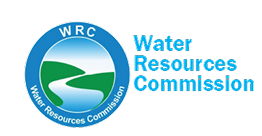
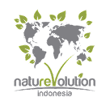
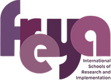
Bring practical fieldwork and analytical tools into one workflow, helping teams move from scattered observations towards evidence they can use.
Standardised, geolocated assessments with photographs, GPS and offline capture.
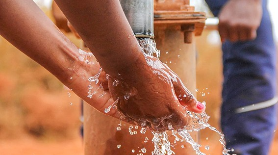
Automated range, consistency and completeness checks prepare the observations.
A drawn boundary produces local risk themes across water, sanitation and climate.
Madib AI synthesises the findings into a structured report and recommendations.
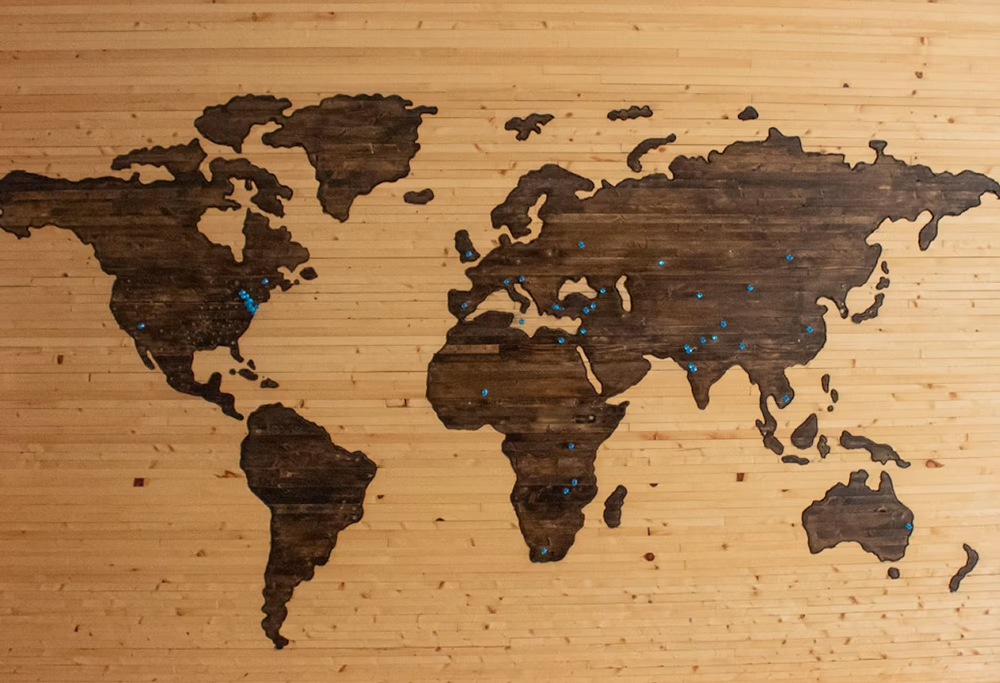
Explore locations, boundaries and community-level information through a geographic lens. The platform is designed to make spatial analysis more approachable.
Support field data collection in environments where internet access may be unreliable.
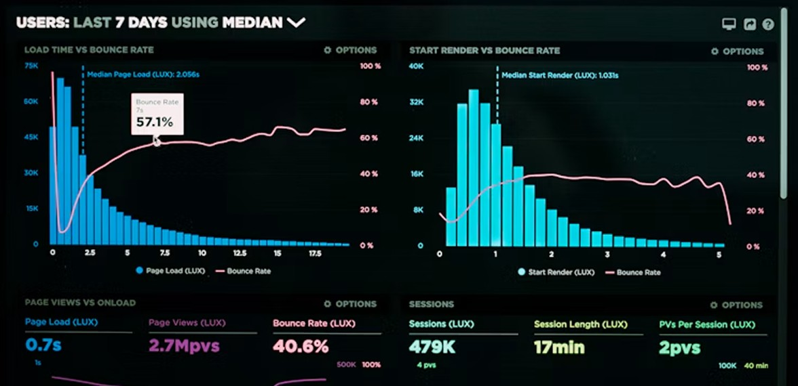
Bring analysis into clearer reporting for research, planning and programme conversations.
Whether you work directly with communities or make decisions at an institutional level, understanding local conditions is essential.
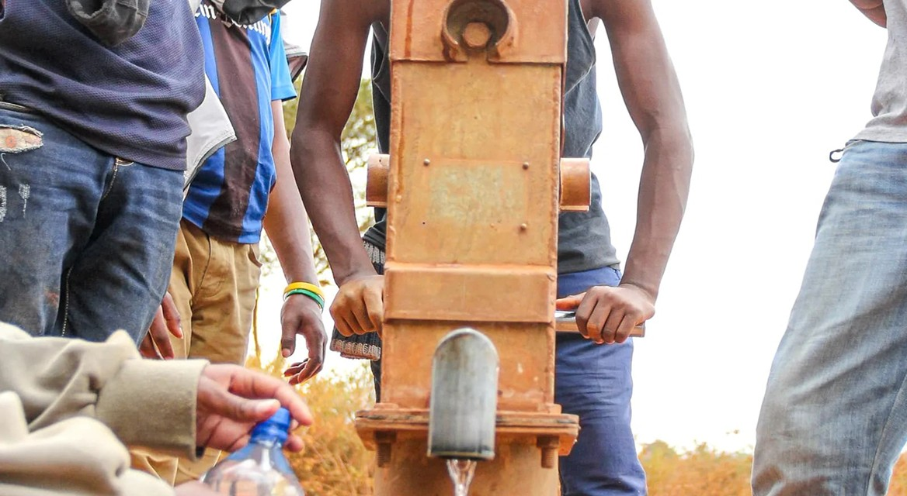
A local volunteer can gather the evidence a community needs to ask for action, prepare for flooding or hold a service provider to account.
See how communities use the platform →Use a consistent collection and analysis pipeline so field teams can spend more time on programming and less time on data administration.
Explore the NGO pathway →Street-level inputs can help target limited infrastructure budgets more precisely than national averages alone.
Explore the government pathway →Open access to community-level indicators, plus grant-ready reporting, can support more transparent conversations about where resources are needed.
Explore the funder pathway →Hyper-local WASH and climate observations with documented indicator definitions and quality-control procedures.
Explore the research pathway →Explore the geography behind community data and see how conditions vary from place to place.
Explore the map ↗ View dashboard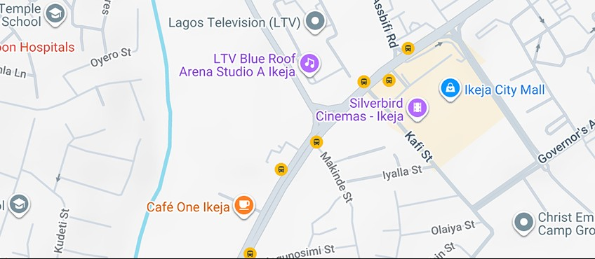
Reliable decisions depend on transparent methods, meaningful indicators and evidence that can be understood. EKCÖLAB helps bring these elements together in one community intelligence experience.
Explore the platform →Well-presented evidence helps teams discuss needs, explain priorities and share what they have learned. EKCÖLAB describes grant-ready reporting as part of its platform offering.
The report visual shown here is a design concept, not a real EKCÖLAB report or a representation of verified results.
Discuss reporting needs ↗A sample layout showing how field observations and geographic context might be brought together.
Learn more about EKCÖLAB and how community intelligence can support your work.
Bring community evidence into focus and explore what it can make possible.
Understand community conditions, explore evidence and identify where action may be needed.
Key indicators for the selected community
Explore available risk indicators across key sectors
Risk indicators are shown only when supported by assessment data.
Geographic context and mapped coverage
Explore the dimensions of community resilience
Community assessment coverage and recent activity
Useful actions to continue your work
Preview the mobile application screens and onboarding experience.
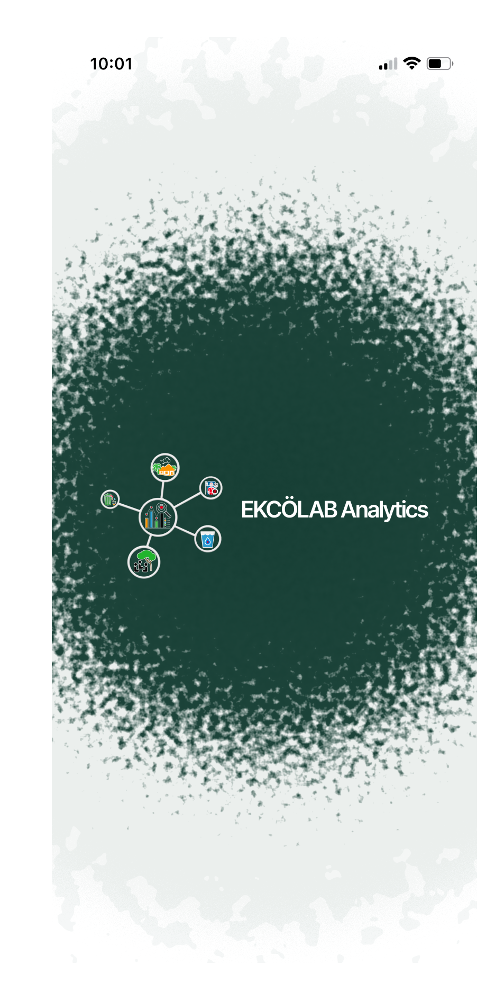
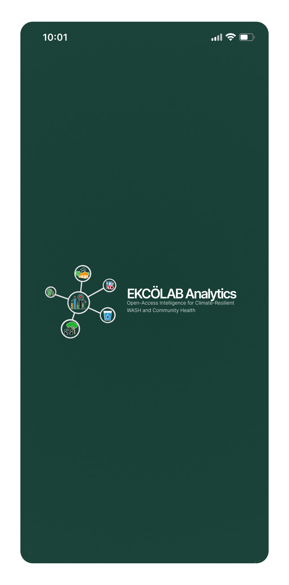
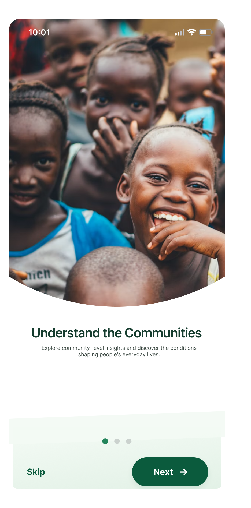